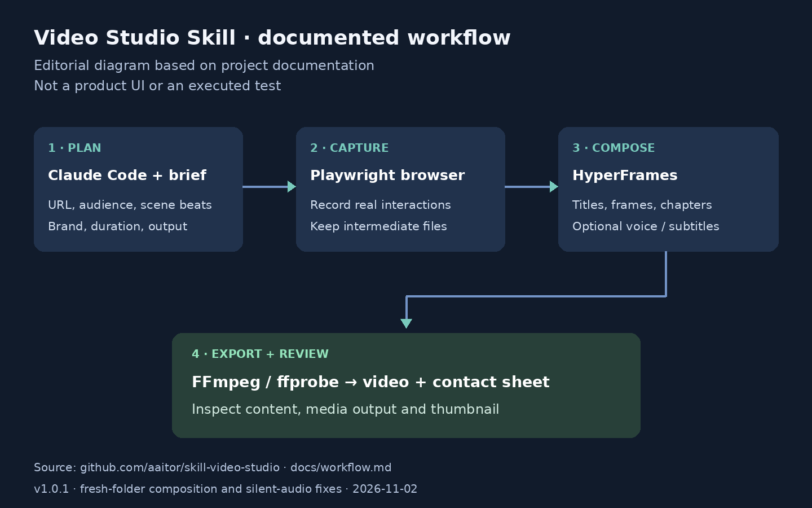

Video Studio Skill · 开源技能更新 · 官方版本说明
Video Studio Skill修复新项目合成，把真实操作录像接到成片流程 2026-11-02T18:11:11Z · · 采集 11-03 09:14Z
01 从演示简报开始 02 修复发生在第一次合成 03 录像、规划与重现要分清 04 可复用流程仍有运行成本 
编辑依据项目文档绘制的工作流示意；不是产品界面或本次运行截图。 ↗ 原始图证 从演示简报开始 开发者做产品视频，通常要在录屏、脚本、片头、配音和导出工具之间来回。Video Studio Skill把这些步骤组织成Claude Code可调用的流程：先给出产品地址、目标观众、核心信息、镜头节奏、品牌与时长，再确定需要演示的操作。技能用Playwright录下实际浏览器页面，把素材交给HyperFrames组合标题、章节与结尾，最后由FFmpeg和ffprobe处理导出及媒体检查。输出还包括缩略图与联系表，便于逐段检查。可选配音、字幕和自备素材并不意味着每次都要调用付费生成服务。
修复发生在第一次合成 11月2日18:11:11Z发布的1.0.1针对两个具体断点。新项目录屏后目录已经存在，原流程再运行初始化会失败，现在改用合成模板；无旁白示例却引用尚不存在的音轨，新版先生成静音轨再渲染。捕获辅助程序也调整了本地依赖安装位置并显示错误。作者报告在新克隆目录执行过示例录屏、静音成片、本地语音版本与缩略图，但没有重新跑完整实时Claude入门路径。发布说明还把头像、多环境和macOS验证列为未完成范围，不能把部分成功扩写成所有配置一键可用。
录像、规划与重现要分清 项目展示材料本身有值得保留的区别。短示范记录真实Claude会话，只写简报和三个镜头，并没有执行浏览器录制或最终渲染；等待片段被省略。较长介绍片里的终端镜头则包含作者制作的HTML重现，不能拿它当作整套命令已现场执行的证明。对于真正要发布的产品视频，应检查关键点击是否来自对应版本的实际界面、字幕是否遮挡结果、旁白是否说到了录屏里根本没有出现的能力。自动编排可以节省拼接，但仍由产品负责人对画面和功能承诺负责。
可复用流程仍有运行成本 这不是免安装的视频网站。完整路径需要Node、浏览器、FFmpeg等本地工具以及Claude Code账户，模型用量与可选服务另计；开源许可不等于运行免费。仓库采用MIT许可，外部工具、模型与素材仍遵守各自条款。与手动录屏再剪辑相比，它更适合反复更新同一产品讲解的人，可保留简报和素材后调整镜头。第一次试用宜选无需登录的短流程，核对实际操作、导出文件和声音，再决定是否接入更多生成环节。如果每次小改都要修复脚本或重新辨认重现画面，自动化可能没有减少总制作时间。
← 回到项目，继续翻页